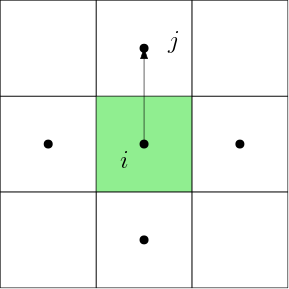
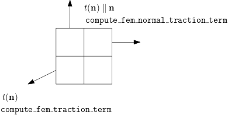

API
Data Structures
PoreFlow.PoreData — TypePoreData is a collection of physical parameters for coupled geomechanics and flow simulation
M: Biot modulusb: Biot coefficientρb: Bulk densityρf: Fluid densitykp: PermeabilityE: Young modulusν: Poisson ratioμ: Fluid viscosityPi: Initial pressureBf: formation volume, $B_f=\frac{\rho_{f,0}}{\rho_f}$g: Gravity acceleration
Matrix Assembling Functions
PoreFlow.compute_fem_stiffness_matrix — Functioncompute_fem_stiffness_matrix(K::Array{Float64,2}, m::Int64, n::Int64, h::Float64)Computes the term
where the constitutive relation is given by
compute_fem_stiffness_matrix(hmat::PyObject,m::Int64, n::Int64, h::Float64)A differentiable kernel. hmat has one of the following sizes
- \[3\times 3\]
- \[4mn \times 3 \times 3\]
PoreFlow.compute_interaction_matrix — Functioncompute_interaction_matrix(m::Int64, n::Int64, h::Float64)Computes the interaction term
The output is a $mn \times 2(m+1)(n+1)$ matrix.
PoreFlow.compute_fvm_tpfa_matrix — Functioncompute_fvm_tpfa_matrix(m::Int64, n::Int64, h::Float64)Computes the term with two-point flux approximation

No flow boundary condition is assumed.
compute_fvm_tpfa_matrix(K::Array{Float64}, m::Int64, n::Int64, h::Float64)Computes the term with two-point flux approximation with distinct permeability at each cell
compute_fvm_tpfa_matrix(K::Array{Float64}, bc::Array{Int64,2}, pval::Array{Float64,1}, m::Int64, n::Int64, h::Float64)Computes the term with two-point flux approximation with distinct permeability at each cell
Additionally, Dirichlet boundary conditions are imposed on the boundary edges bc.
Returns both the sparse matrix A and the right hand side rhs
PoreFlow.compute_fem_mass_matrix — Functioncompute_fem_mass_matrix(m::Int64, n::Int64, h::Float64)Computes the finite element mass matrix
The matrix size is $2(m+1)(n+1) \times 2(m+1)(n+1)$.
PoreFlow.compute_fvm_mass_matrix — Functioncompute_fvm_mass_matrix(m::Int64, n::Int64, h::Float64)Returns the FVM mass matrix
PoreFlow.compute_fem_mass_matrix1 — Functioncompute_fem_mass_matrix1(ρ::Array{Float64}, m::Int64, n::Int64, h::Float64)Computes the mass matrix for a scalar value $u$
The output is a $(m+1)*(n+1)$ sparse matrix.
compute_fem_mass_matrix1(m::Int64, n::Int64, h::Float64)Computes the mass matrix for a scalar value $u$
The output is a $(m+1)*(n+1)$ sparse matrix.
PoreFlow.compute_fem_stiffness_matrix1 — Functioncompute_fem_stiffness_matrix1(K::Array{Float64,2}, m::Int64, n::Int64, h::Float64)Computes the term
Returns a $(m+1)\times (n+1)$ matrix
compute_fem_stiffness_matrix1(hmat::PyObject, m::Int64, n::Int64, h::Float64)A differentiable kernel for computing the stiffness matrix.
Vector Assembling Functions
PoreFlow.compute_fem_source_term — Functioncompute_fem_source_term(f1::Array{Float64}, f2::Array{Float64},
m::Int64, n::Int64, h::Float64)Computes the term
Returns a $2(m+1)(n+1)$ vector.
PoreFlow.compute_fvm_source_term — Functioncompute_fvm_source_term(f::Array{Float64}, m::Int64, n::Int64, h::Float64)Computes the source term
PoreFlow.compute_fvm_mechanics_term — Functioncompute_fvm_mechanics_term(u::Array{Float64}, m::Int64, n::Int64, h::Float64)Computes the mechanic interaction term
Here
Numerically, we have
compute_fvm_mechanics_term(u::PyObject, m::Int64, n::Int64, h::Float64)PoreFlow.compute_fem_normal_traction_term — Functioncompute_fem_normal_traction_term(t::Array{Float64,1}, bdedge::Array{Int64},
m::Int64, n::Int64, h::Float64)
compute_fem_normal_traction_term(t::Float64, bdedge::Array{Int64},
m::Int64, n::Int64, h::Float64)Computes the normal traction term
Here $t(\mathbf{n})\parallel\mathbf{n}$ points outward to the domain and the magnitude is given by t. bdedge is a $N\times2$ matrix and each row denotes the indices of two endpoints of the boundary edge.
See compute_fem_traction_term for graphical illustration.
PoreFlow.compute_fem_traction_term — Functioncompute_fem_traction_term(t::Array{Float64, 2},
bdedge::Array{Int64,2}, m::Int64, n::Int64, h::Float64)Computes the traction term
The number of rows of t is equal to the number of edges in bdedge. The first component of t describes the $x$ direction traction, while the second component of t describes the $y$ direction traction.
Also see compute_fem_normal_traction_term.

PoreFlow.compute_von_mises_stress_term — Functioncompute_von_mises_stress_term(K::Array{Float64}, u::Array{Float64}, m::Int64, n::Int64, h::Float64)Compute the von Mises stress on the Gauss quadrature nodes.
compute_von_mises_stress_term(Se::Array{Float64,2}, m::Int64, n::Int64, h::Float64)Se is a $4mn\times3$ array that stores the stress data at each Gauss point.
PoreFlow.compute_fem_source_term1 — Functioncompute_fem_source_term1(f::Array{Float64},
m::Int64, n::Int64, h::Float64)Computes the term
Returns a $(m+1)\times (n+1)$ vector.
PoreFlow.compute_fem_flux_term1 — Functioncompute_fem_flux_term1(t::Array{Float64},
bdedge::Array{Int64,2}, m::Int64, n::Int64, h::Float64)Computes the traction term
PoreFlow.compute_strain_energy_term — Functioncompute_strain_energy_term(S::Array{Float64, 2}, m::Int64, n::Int64, h::Float64)Computes the strain energy
where $\sigma$ is provided by S, a $4mn \times 3$ matrix. The values $\sigma_{11}, \sigma_{22}, \sigma_{12}$ are defined on 4 Gauss points per element.
compute_strain_energy_term(S::PyObject,m::Int64, n::Int64, h::Float64)A differentiable kernel.
PoreFlow.compute_strain_energy_term1 — Functioncompute_strain_energy_term1(S::PyObject, m::Int64, n::Int64, h::Float64)Computes the strain energy
where $\sigma$ is provided by S, a $4mn \times 2$ matrix. The values $\sigma_{31}, \sigma_{32}$ are defined on 4 Gauss points per element.
compute_strain_energy_term1(sigma::PyObject, m::Int64, n::Int64, h::Float64)A differentiable operator.
PoreFlow.compute_fem_viscoelasticity_strain_energy_term — Functioncompute_fem_viscoelasticity_strain_energy_term(ε0, σ0, ε, A, B, m, n, h)Given the constitutive relation
this function computes
and returns $f$
Evaluation Functions
PoreFlow.eval_f_on_gauss_pts — Functioneval_f_on_gauss_pts(f::Function, m::Int64, n::Int64, h::Float64)Evaluates f at Gaussian points and return the result as $4mn$ vector out (4 Gauss points per element)

PoreFlow.eval_f_on_boundary_node — Functioneval_f_on_boundary_node(f::Function, bdnode::Array{Int64}, m::Int64, n::Int64, h::Float64)Returns a vector of the same length as bdnode whose entries corresponding to bdnode nodes are filled with values computed from f.
f has the following signature
f(x::Float64, y::Float64)::Float64PoreFlow.eval_f_on_boundary_edge — Functioneval_f_on_boundary_edge(f::Function, bdedge::Array{Int64,2}, m::Int64, n::Int64, h::Float64)Returns a vector of the same length as bdedge whose entries corresponding to bdedge nodes are filled with values computed from f.
f has the following signature
f(x::Float64, y::Float64)::Float64PoreFlow.eval_strain_on_gauss_pts — Functioneval_strain_on_gauss_pts(u::Array{Float64}, m::Int64, n::Int64, h::Float64)Computes the strain on Gauss points. Returns a $4mn\times3$ matrix, where each row denotes $(\varepsilon_{11}, \varepsilon_{22}, 2\varepsilon_{12})$ at the corresponding Gauss point.
eval_strain_on_gauss_pts(u::PyObject, m::Int64, n::Int64, h::Float64)A differentiable kernel.
PoreFlow.eval_strain_on_gauss_pts1 — Functioneval_strain_on_gauss_pts1(u::PyObject, m::Int64, n::Int64, h::Float64)A differentiable kernel.
Boundary Conditions
PoreFlow.fem_impose_Dirichlet_boundary_condition — Functionfem_impose_Dirichlet_boundary_condition(A::SparseMatrixCSC{Float64,Int64},
bd::Array{Int64}, m::Int64, n::Int64, h::Float64)Imposes the Dirichlet boundary conditions on the matrix A.
Returns 2 matrix,
fem_impose_Dirichlet_boundary_condition(L::SparseTensor, bdnode::Array{Int64}, m::Int64, n::Int64, h::Float64)A differentiable kernel for imposing the Dirichlet boundary of a vector-valued function.
PoreFlow.fem_impose_Dirichlet_boundary_condition1 — Functionfem_impose_Dirichlet_boundary_condition1(A::SparseMatrixCSC{Float64,Int64},
bd::Array{Int64}, m::Int64, n::Int64, h::Float64)Imposes the Dirichlet boundary conditions on the matrix A Returns 2 matrix,
bd must NOT have duplicates.
fem_impose_Dirichlet_boundary_condition1(L::SparseTensor, bdnode::Array{Int64}, m::Int64, n::Int64, h::Float64)A differentiable kernel for imposing the Dirichlet boundary of a scalar-valued function.
Visualization
PoreFlow.visualize_pressure — Functionvisualize_pressure(U::Array{Float64, 2}, m::Int64, n::Int64, h::Float64)Visualizes pressure. U is the solution vector.
PoreFlow.visualize_displacement — Functionvisualize_displacement(u::Array{Float64, 2}, m::Int64, n::Int64, h::Float64)Generates scattered plot animation for displacement $u\in \mathbb{R}^{(NT+1)\times 2(m+1)(n+1)}$.
PoreFlow.visualize_stress — Functionvisualize_stress(K::Array{Float64, 2}, U::Array{Float64, 2}, m::Int64, n::Int64, h::Float64; name::String="")Visualizes displacement. U is the solution vector, K is the elasticity matrix ($3\times 3$).
visualize_stress(Se::Array{Float64, 2}, m::Int64, n::Int64, h::Float64; name::String="")Visualizes the Von Mises stress. Se is the Von Mises at the cell center.
PoreFlow.visualize_von_mises_stress — Functionvisualize_von_mises_stress(Se::Array{Float64, 2}, m::Int64, n::Int64, h::Float64; name::String="")Visualizes the Von Mises stress.
PoreFlow.visualize_scalar_on_gauss_points — Functionvisualize_scalar_on_gauss_points(u::Array{Float64,1}, m::Int64, n::Int64, h::Float64, args...;kwargs...)Visualizes the scalar u using pcolormesh. Here u is a length $4mn$ vector and the values are defined on the Gauss points
Modeling Tools
PoreFlow.layer_model — Functionlayer_model(u::Array{Float64, 1}, m::Int64, n::Int64, h::Float64)Convert the vertical profile of a quantity to a layer model. The input u is a length $n$ vector, the output is a length $4mn$ vector, representing the $4mn$ Gauss points.
layer_model(u::PyObject, m::Int64, n::Int64, h::Float64)A differential kernel for layer_model.
PoreFlow.compute_vel — Functioncompute_vel(a::Union{PyObject, Array{Float64, 1}},
v0::Union{PyObject, Float64},psi::Union{PyObject, Array{Float64, 1}},
sigma::Union{PyObject, Array{Float64, 1}},
tau::Union{PyObject, Array{Float64, 1}},eta::Union{PyObject, Float64})Computes $x = u_3(x_1, x_2)$ from rate and state friction. The governing equation is
PoreFlow.compute_plane_strain_matrix — Functioncompute_plane_strain_matrix(E::Float64, ν::Float64)Computes the elasticity matrix for 2D plane strain
Misc
PoreFlow.trim_coupled — Functiontrim_coupled(pd::PoreData, Q::SparseMatrixCSC{Float64,Int64}, L::SparseMatrixCSC{Float64,Int64},
M::SparseMatrixCSC{Float64,Int64},
bd::Array{Int64}, Δt::Float64, m::Int64, n::Int64, h::Float64)Assembles matrices from mechanics and flow and assemble the coupled matrix
Q is obtained from compute_fvm_tpfa_matrix, M is obtained from compute_fem_stiffness_matrix, and L is obtained from compute_interaction_matrix.
PoreFlow.coupled_impose_pressure — Functioncoupled_impose_pressure(A::SparseMatrixCSC{Float64,Int64}, pnode::Array{Int64},
m::Int64, n::Int64, h::Float64)Returns a trimmed matrix.
PoreFlow.bcnode — FunctionAbstract bcnode(desc::String, m::Int64, n::Int64, h::Float64)
Returns the node indices for the description. Multiple descriptions can be concatented via |
upper
|------------------|
left | | right
| |
|__________________|
lowerExample
bcnode("left|upper", m, n, h)PoreFlow.bcedge — Functionbcedge(desc::String, m::Int64, n::Int64, h::Float64)Returns the edge indices for description. See bcnode
PoreFlow.femidx — Functionfemidx(d::Int64, m::Float64)Returns the FEM index of the dof d. Basically, femidx is the inverse of
(i,j) → d = (j-1)*(m+1) + iPoreFlow.fvmidx — Functionfvmidx(d::Int64, m::Float64)Returns the FVM index of the dof d. Basically, femidx is the inverse of ``` (i,j) → d = (j-1)*m + i